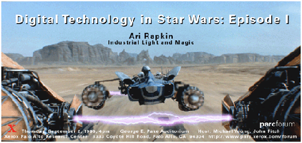

In February 1998 I joined Industrial Light & Magic as a Production
Software Engineer, aka "Software Wrangler". Basically, my job was to keep
problems in the graphics software
from preventing the artists from getting their shots done. When
software broke... or never worked... or someone wanted a new feature
added... or just wanted to know what the heck the computer was doing
"because I've got to have this shot finished TODAY!"... they
called me.
In Spring of 2000, I started working with the simulation group in the
software R&D department. The first several months were spent on the
fluid simulation engines -- improving, developing the UI, multithreading,
etc. More recently I've been doing much the same thing for the cloth
simulation system, for shows including Star Wars Episode II and Harry
Potter II.
George Lucas, in a New York Times
interview, 21 March 1999:
What comes out is kind of amazing to all of us, not just to those
people who see it in the end. We, too, are amazed when we do it!
Which is where the fun of it, the joy of what we do, comes from.
It's the joy of creativity. We put it together, step back, look at
it and say, "Whoa, that's kind of neat!" As corny as that sounds,
that's ultimately the primary driving force for us.
|
Film credits
- "Small Soldiers" (July 1998)
Production Software Engineer
- "The Mummy" (May 1999)
Production Software Engineer
- "Work In Progress (2000 - short film)
Production Software
- "Jurassic Park III" (July 2001)
CG Software Engineer
- "Star Wars Episode II: Attack of the Clones" (May 2002)
Video Engineering and Digital Technologies
- I appear several times in the crowds in Star Wars Episode I.
|

[click for abstract of talk]
|
Previous Employment
- Summer 1997
- I worked for a month at Tiger Leaf Communications, then
taught the graphics track of Andrew's Leap, a program for
gifted high-school students.
- Summer 1996
- I was a research intern at Xerox PARC, working with Ken
Fishkin on a non-photorealistic rendering web service. I worked in
Palo Alto the year before too, as a research intern at DEC SRC,
where I ported a handwriting recognition system to new operating
environments and produced a set of Tcl/Tk widgets and applications for
it.
- Summers 1989 -- 1994
- I taught math at
The
Johns Hopkins University's Center for Talented
Youth. I started as a math TA, and worked my way up to instructor
and math coordinator, which meant that in addition to a full teaching
load I also supervised all the other math classes at my campus. Now
I'm just a
mattababy.
School's Out!
-
M.S. in computer science (graphics & animation)
- December 1997, Carnegie Mellon University
-
M.C.S. (computer vision)
- May 1995, University of Virginia
-
B.A. in math
- January 1992, The Johns Hopkins University
Back to my home page
Ari Rapkin
Last modified: Fri Sep 3 14:00:17 PDT 1999